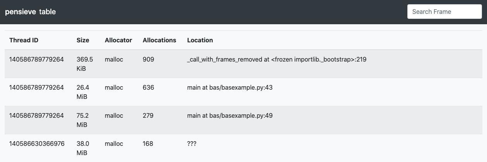

Table Reporter#
The table reporter generates an HTML document showing a simple tabular view of the allocations contributing to the tracked process’s peak memory usage. Each source line that contributed to that peak memory usage is given a row in the generated table, showing the amount of memory it allocated, the type of allocator it used, and the number of allocations it was responsible for.
The table can be sorted by each column and searched in the search field. The columns show the following data:
Thread ID: thread where the allocation happened
Size: total amount of memory used by all of these allocations
Allocator: allocator or deallocator function which acquired the memory
Allocations: total number of allocations performed by this entry
Location: function name, file and line of the allocation or “???” if unknown
Basic Usage#
The general form of the table subcommand is:
memray table [options] <results>
The only argument the table subcommand requires is the capture file
previously generated using the run subcommand.
The output file will be named as memray-table-<input file name>.html unless the -o argument was
specified to override the default name.
CLI Reference#
usage: memray table [-h] [-o OUTPUT] [-f] [--leaks | --temporary-allocation-threshold N | --temporary-allocations] results
Positional Arguments#
- results
Results of the tracker run
Named Arguments#
- -o, --output
Output file name
- -f, --force
If the output file already exists, overwrite it
Default: False
- --leaks
Show memory leaks, instead of peak memory usage
Default: False
- --temporary-allocation-threshold
Report temporary allocations, as opposed to leaked allocations or high watermark allocations. An allocation is considered temporary if at most N other allocations occur before it is deallocated. With N=0, an allocation is temporary only if it is immediately deallocated before any other allocation occurs.
Default: -1
- --temporary-allocations
Equivalent to --temporary-allocation-threshold=1
Please submit feedback, ideas, and bug reports by filing a new issue at https://github.com/bloomberg/memray/issues